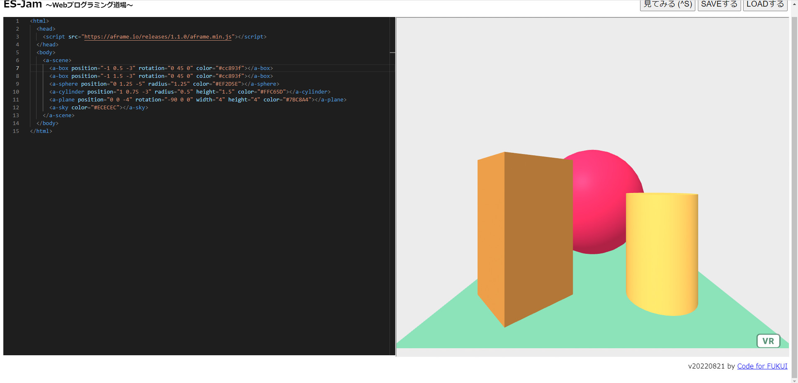
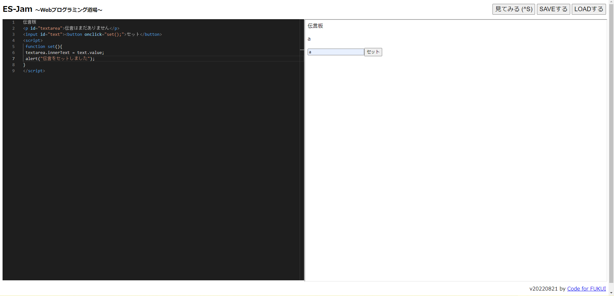

第3週目
3-1 JavaScript体験：VR空間を作る

伝言板
1.内容
ES-Jamというhtmlのコードを書くことのできるサイト
を使い、A-frameというWebでVRが使えるサイトのコー
ドを使ってVR空間を作った。また、貼り付けたコードの
中身を書き換えて、見た目を変えたりした。
2.感想
ライブラリのおかげで複雑な処理を数行のスクリプト
で再現できたので、とても簡単で分かりやすかった。
3-2 JavaScript体験：伝言プログラムを作る

伝言板
1.内容
配られたプリントを参考にし、
伝言板を作るスクリプトを書いた。
2.感想
伝言を作ることは難しかったが、理解できたので良かった。
3-3 JavaScriptプログラムの３次元空間の体験
1.内容
ないようないよう
2.感想
かんそうかんそう